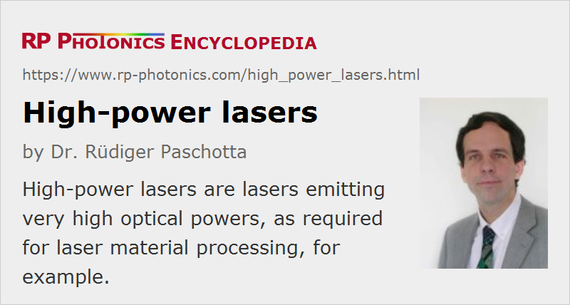

High-power Lasers
Definition: lasers emitting very high optical powers
More general terms: lasers
German: Hochleistungslaser
How to cite the article; suggest additional literature
Author: Dr. Rüdiger Paschotta
Lasers with high output powers are required for a number of applications, e.g. for
- material processing (welding, cutting, drilling, soldering, marking, surface modification)
- large-scale laser displays (→ RGB sources)
- remote sensing (e.g. with LIDAR)
- medical applications (e.g. surgery)
- military applications (e.g. anti-missile weapons)
- fundamental science (e.g. particle acceleration)
- laser-induced nuclear fusion (e.g. in the NIF project)
Material processing with high-power lasers is the second largest segment of laser applications concerning global turnovers (after communications).
There is no commonly accepted definition of the property “high power”; in the context of laser material processing, it usually means multiple kilowatts or at least a few hundred watts, whereas for laser displays some tens of watts many already be considered high. In some areas, this label is assigned simply for generating a significantly higher output power than other lasers based on the same technology; for example, some “high-powered” laser pointers emit a few hundred milliwatts, whereas ordinary laser pointers are limited to a few milliwatts.
Additional aspects come into play for pulsed lasers. For example, the peak power may be as important as the average output power for a Q-switched laser. Depending on the pulse repetition rate and pulse duration, the peak power may be very high even for a laser with a moderate average output power. Usually, a high average power and not only a high peak power is expected from a high-power laser.
Technical Challenges
The generation of high optical powers in lasers involves a number of technical challenges:
- One requires one or several powerful pump sources. While lamp pumping was originally the only viable approach for most solid-state lasers, pumping with high-power laser diodes (diode bars or diode stacks) has become more and more widespread. Diode-pumped lasers now offer the highest output powers in continuous-wave operation. For very high pulse energies (e.g. tens of joules), lamp pumping is still more practical.
- At least for long-term continuous-wave operation, a high wall-plug efficiency is an important economic factor. Unfortunately, various technical challenges (e.g. thermal effects, see below) tend to make it more difficult at very high power levels to achieve a good efficiency.
- Even in a fairly efficient gain medium, a substantial fraction of the pump power is converted into heat, which can have a number of detrimental side effects. In the worst case, thermally induced stress leads to fracture of the laser crystal. High-power solid-state lasers also exhibit strong thermal lensing, making it substantially more difficult to achieve a high beam quality. In lasers with polarized output, depolarization loss often compromises the efficiency. Efficient heat removal and thermal management are therefore important issues, and additional measures (e.g. in the context of resonator design) are often required for coping with various kinds of thermal effects.
- Particularly in Q-switched lasers, very high optical intensities can occur, which may lead to laser-induced damage of optics (such as laser mirrors) e.g. via laser-induced breakdown. Even if the optical intensities remain well below the damage threshold of all optical elements, tiny dust particles can provoke damage phenomena. It can therefore be essential to keep the laser setup very clean, e.g. by operating it in a sealed case which may be opened only in a clean room. In addition, it can be imperative to use precision optics with a high optical damage threshold.
- Various types of nonlinear effects can also become relevant, particularly in high-power fiber lasers. Examples are stimulated Raman scattering, Brillouin scattering and four-wave mixing.
- Laser resonators with large effective mode areas tend to be sensitive to misalignment and vibrations of optical components. It can therefore be more challenging to achieve robust maintenance-free operation and a good beam pointing stability.
Types of High-power Lasers
There are several different types of high-power lasers:
- High-power diode bars and diode stacks have already been mentioned above as possible pump sources for solid-state lasers. They allow the generation of kilowatts of output power, but with a poor beam quality. For some applications, where beam quality is not essential, the direct use of high-power laser diodes (→ direct diode lasers) e.g. for laser welding, soldering and brazing, cladding and heat treatment, is an interesting option, offering a comparatively simple, compact, cost-effective and energy-efficient solution.
- There are various types of lamp-pumped or diode-pumped solid-state bulk lasers. Rod lasers can be optimized for several kilowatts of output power, but diffraction-limited beam quality is possible only up to a few hundred watts (with significant efforts). Slab lasers can be developed for tens of kilowatts or more with relatively high beam quality. Thin-disk lasers easily generate hundreds of watts with diffraction-limited beam quality and have the potential to reach that even at power levels well above 10 kW. The power efficiency is usually fairly good.
- High-power fiber lasers and amplifiers can generate up to a few kilowatts with close to diffraction-limited beams and high power efficiency. With relaxed beam quality requirements, even significantly higher powers are possible. Strictly, such fiber devices are often not lasers, but master oscillator power amplifier (MOPA) configurations.
- Some gas lasers, e.g. CO2 lasers and excimer lasers, are also suitable for hundreds or thousands of watts of output power. They typically operate in different other regions than solid-state lasers, e.g. in the mid-infrared or ultraviolet region.
- There are chemical lasers with multi-kilowatt or even megawatt output powers, explored e.g. in the context of anti-missile weapons.
A perhaps not very practical, but theoretically very interesting high-power laser concept is that of the radiation-balanced laser. Here, the heat generation in the gain medium is essentially eliminated by optical refrigeration.
An aspect of great importance for further laser development is that of power scaling, based on certain power-scalable laser architectures. Even for not power-scalable laser types, it can be very helpful to understand the scaling properties of various parts or techniques.
Safety Issues
The use of high-power lasers raises important issues on laser safety:
- The output powers are far higher than what any eye can tolerate, so that even tiny parasitic reflections must be safely prevented from reaching an eye. Even the use of strongly absorbing laser goggles may not be sufficient, as such glasses may not be able to stand such high optical intensities for more than a brief moment of time.
- The skin and clothes of workers are also at risk in environments where optical powers and intensities are sufficient e.g. for laser cutting of metals.
- High-power laser beams may incinerate materials such as plastics or wood. That happens easily already for laser powers of the order of 1 W. Fire protection is therefore an important issue. Also, the formation of poisonous fumes needs to be avoided, or such fumes have to be efficiently removed.
- There are various types of risks which are not related to the laser beams themselves. In particular, high-power electric power supplies often involve high electric voltages, which can cause electric shocks. Power cables, which can be damaged in a harsh industrial environment, can also create hazards.
An important safety principle in the area of high-power lasers is to enclose the laser setup with a solid housing, and ideally also the whole area where dangerous laser beams can be present. Interlocks can prevent the operation of a laser at times where persons are in a hazardous area.
Suppliers
The RP Photonics Buyer's Guide contains 81 suppliers for high-power lasers. Among them:
Questions and Comments from Users
Here you can submit questions and comments. As far as they get accepted by the author, they will appear above this paragraph together with the author’s answer. The author will decide on acceptance based on certain criteria. Essentially, the issue must be of sufficiently broad interest.
Please do not enter personal data here; we would otherwise delete it soon. (See also our privacy declaration.) If you wish to receive personal feedback or consultancy from the author, please contact him e.g. via e-mail.
By submitting the information, you give your consent to the potential publication of your inputs on our website according to our rules. (If you later retract your consent, we will delete those inputs.) As your inputs are first reviewed by the author, they may be published with some delay.
See also: thermal lensing, nonlinearities, power scaling of lasers, thin-disk lasers, slab lasers, rod lasers, lamp-pumped lasers, high-power fiber lasers and amplifiers, cryogenic lasers, radiation-balanced lasers, direct diode lasers, laser safety
and other articles in the category lasers

This encyclopedia is authored by Dr. Rüdiger Paschotta, the founder and executive of RP Photonics Consulting GmbH. How about a tailored training course from this distinguished expert at your location? Contact RP Photonics to find out how his technical consulting services (e.g. product designs, problem solving, independent evaluations, training) and software could become very valuable for your business!
|  |
If you like this page, please share the link with your friends and colleagues, e.g. via social media:
These sharing buttons are implemented in a privacy-friendly way!